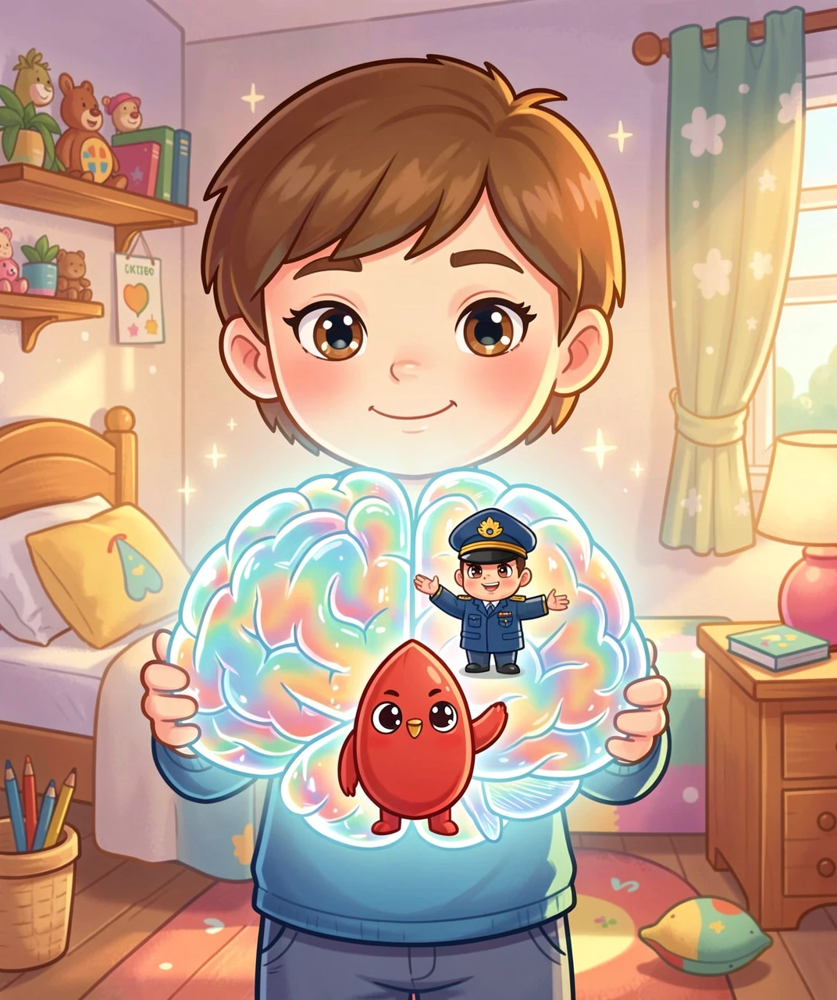
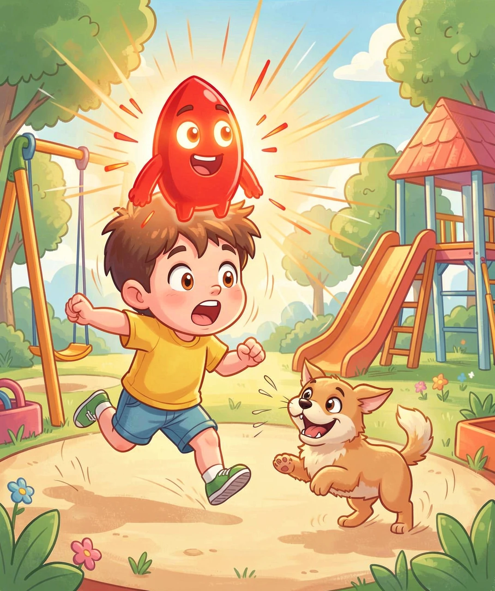
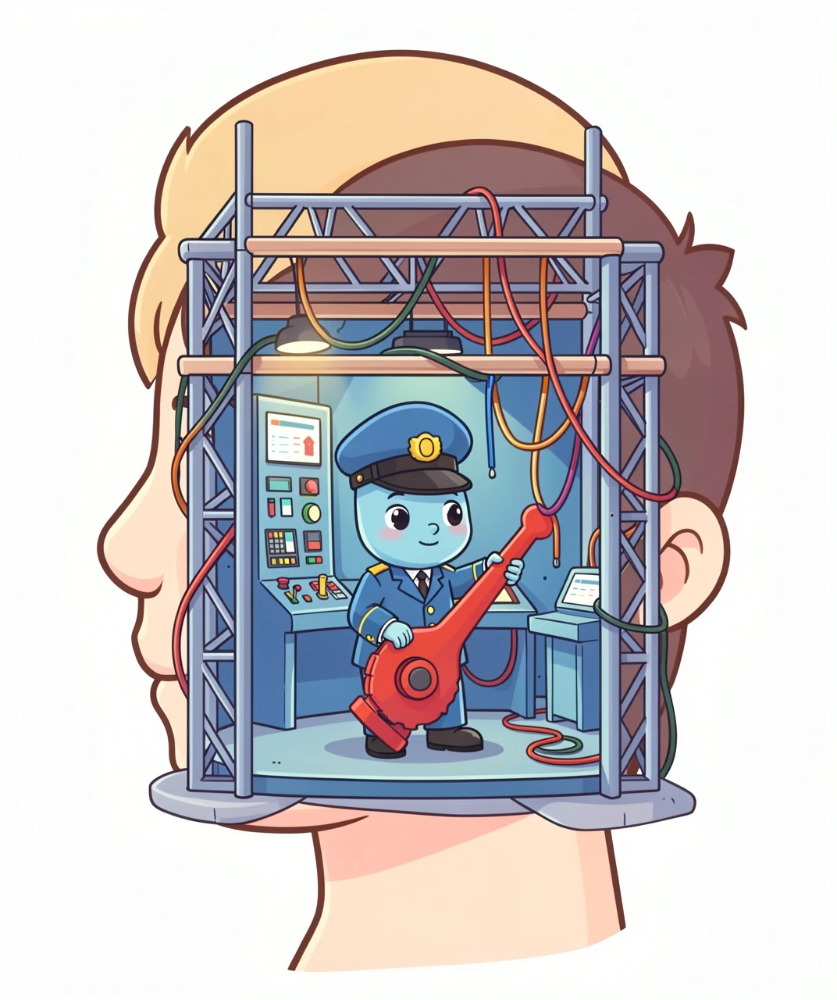
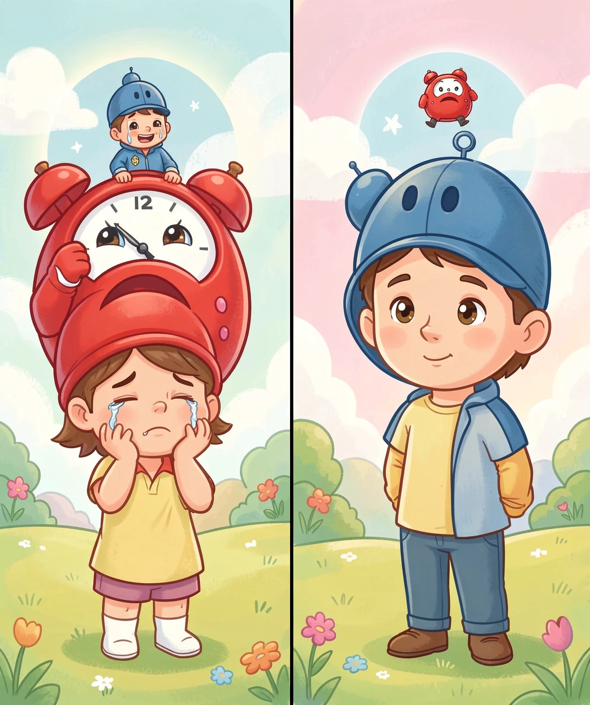
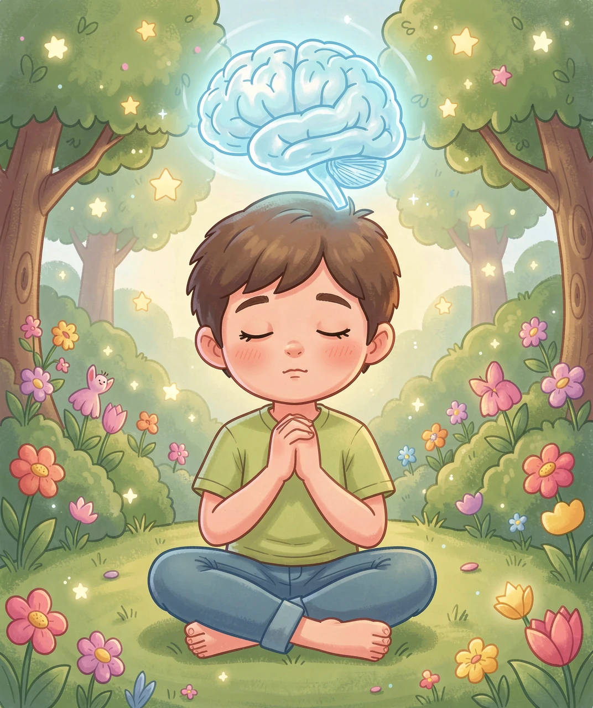

前额叶和杏仁核：为什么小朋友容易发脾气？
你有没有想过，当你又想买玩具又知道"不能乱花钱"的时候，脑子里是谁在打架？其实，你的大脑里真的住着两位"小工人"，一个负责"冲上去"，一个负责"等等看"。它们一个叫杏仁核，一个叫前额叶。
杏仁核长得像一颗小小的杏仁，躲在大脑最深处；前额叶在额头后头，是大脑最"新"、最聪明的一块。今天我们要弄明白：它们各自干什么？更重要的是——为什么它们会让你一会儿冲动、一会儿又能冷静？

先认识这位"急性子"：杏仁核。它特别古老，鱼、鸟、猫、狗脑子里都有它。它只有一个任务——保命。当你突然听到巨响、看到一条蛇、或者被人吓一跳，杏仁核会在你还没想清楚之前就拉响警报：心跳变快、呼吸变短、肌肉绷紧，准备"打"或"逃"。
为什么它要这么快、快到不让你先思考？因为慢一步可能就没命了。在很久以前，草丛里钻出一只老虎，会思考的祖先可能已经被吃掉了，而"先跳起来再问为什么"的祖先活了下来。所以杏仁核走的是一条"高速 shortcut"——它绕过思考，直接让身体动起来。这很聪明，但代价是：它常常分不清"真危险"和"只是吓一跳"。

另一位小工人叫前额叶，它是大脑的"总指挥"：帮你计划明天、忍住不抢别人的东西、想想"我做这件事会有什么后果"、还能猜到别人心里在想什么。听起来很厉害，对吧？可是——为什么小朋友的指挥官常常"管不住"自己呢？
答案藏在"施工时间"里。前额叶是大脑里最后才盖好的"大楼"。它要处理的信息最复杂，需要的"电线"最多，而且这些电线不是生下来就接好的，要靠你一点点经历、一次次练习才能长牢。科学家发现，这座大楼一般要等到你 二十多岁 才彻底竣工！所以小朋友的前额叶，其实是个还在搭脚手架、拉电线的"工地"。它当然想帮你刹车，只是力气还不够大。

现在把两位小工人放在一起看，答案就清楚了。在一个孩子的大脑里：杏仁核（警报）已经又大又响、完全建好；前额叶（指挥官）却还小、还嫩、还在施工。所以当不开心的事发生，警报"叮——"地先响，身体立刻炸开；而指挥官手里的刹车杆还没接好线，按下去软绵绵的，停不住。
这告诉我们一件很重要的事：小朋友容易发脾气，不是"不乖"，是大脑的生物结构还没长好。孩子并不是故意要失控，而是他脑子里的"刹车系统"正在安装中。明白了这一点，我们就不会随便骂自己"怎么又控制不住"，也不会随便怪别人"太任性"——我们只是在等指挥官长大而已。

好消息是：指挥官是可以"练"大的！每一次你忍住不发脾气、每一次你深呼吸冷静下来，脑子里的刹车电线就变粗一点，像锻炼肌肉一样。具体怎么做？我们追到最底层：
① 好好睡觉：大脑是在睡觉时"打扫卫生"并接线路的。睡不够，指挥官就断电，刹车失灵。② 先停 6 秒、深呼吸：杏仁核的警报来得快、去得也快（大约几秒）；深吸一口气制造的这几秒空隙，刚好让指挥官来得及上线。③ 给情绪起名字：说出"我现在很生气"，等于把思考脑叫回来上班，警报就会小一点。④ 多练习"等一等"：每次忍住，都是在给刹车加粗电线。⑤ 让生活有规律：可预测的世界，警报就不会乱响。
